East Malaysia 2002

Hillview Gardens
26.Mar-04.Apr.2002
Visited Hillview Gardens
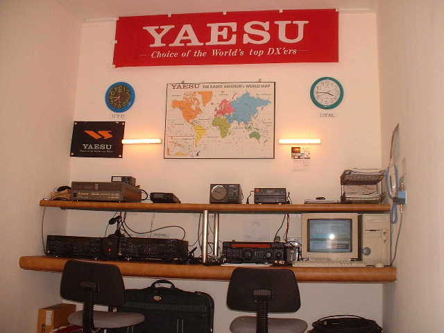
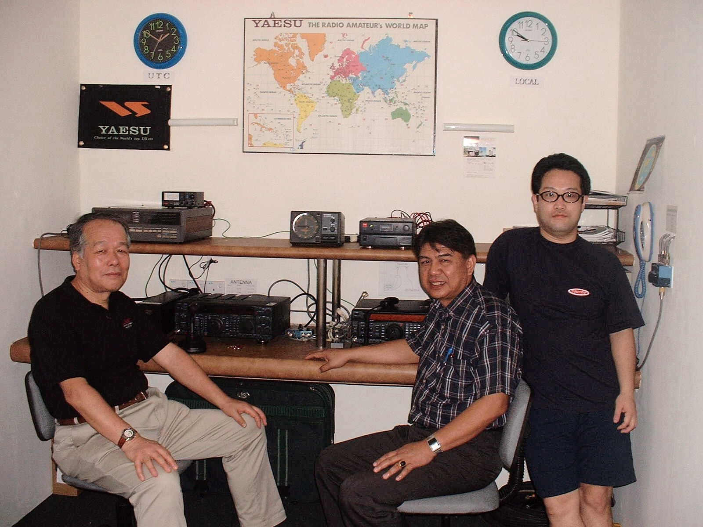
(左)Kota Kinabaluの9M6LSCのシャックは整備され常時インターネットの利用も可能になった。
(右)Kinarutのホテルまで迎えに来てくれたHillview Gardensのオーナー9M6MU・Alfons(中央)


|
◎ Hillview Gardensへ
2002年最初のマレーシアからの運用は、3月25日から4月4日までの10日間の日程で行なわれた。
今回の同行者はJK7TKE・福井さん。 |
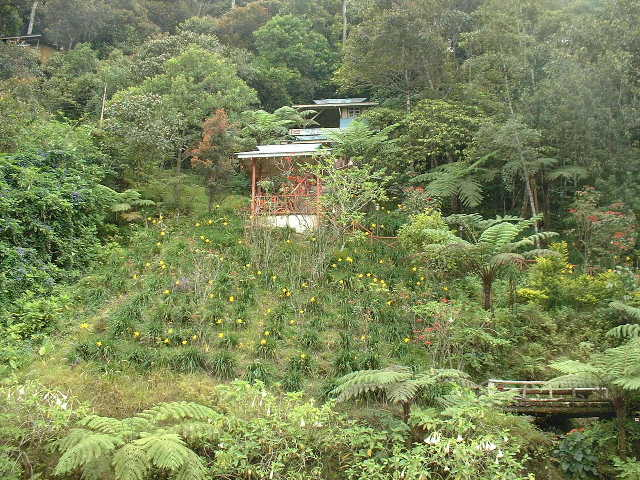
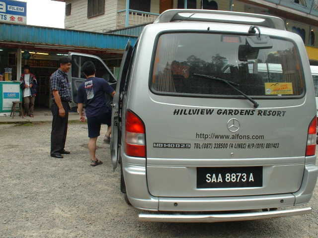
|
3月28日の朝、Hillview Gardensのオーナー9M6MU・Alfonsが車で迎えに来てくれた。
"カラオケセット"が据え付けられた真新しいベンツのミニ・バスでケニンガウに向け出発。
安全運転を宣言していたAlfonsの運転は慎重でケニンガウに到着したのは午後2時過ぎだった。
|
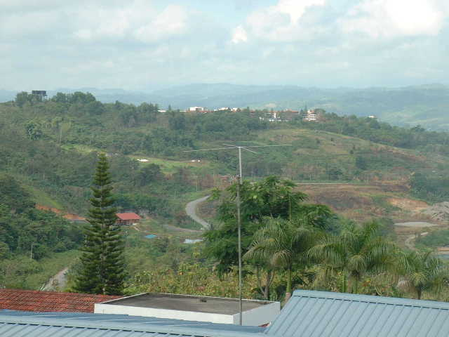
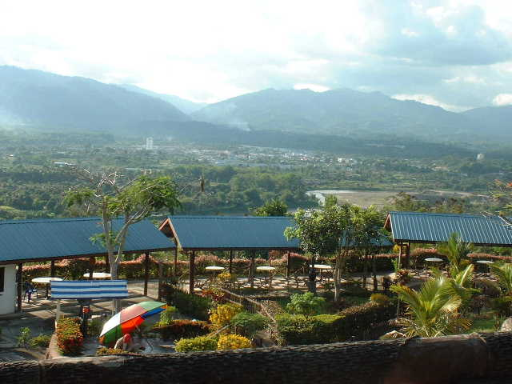
| Hillview GardensではオーナーのXYLのDoris(9W6DU)、無線局の技術担当のJani(9M6US)が歓迎の横断幕で迎えてくれた。 ここを訪問するのは2度目だが滞在するのは今回が初めて。 9M6AACの無線室は玄関を入って左側、宿泊する部屋は右側と隣接していて使い勝手は最高。 |

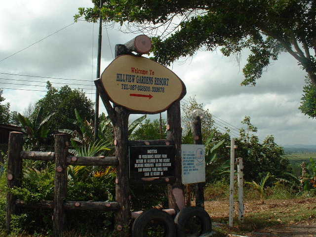
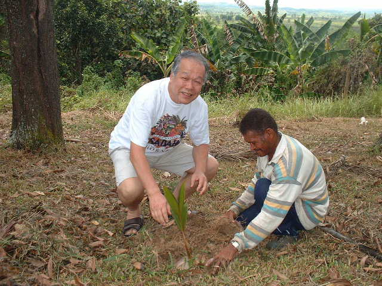
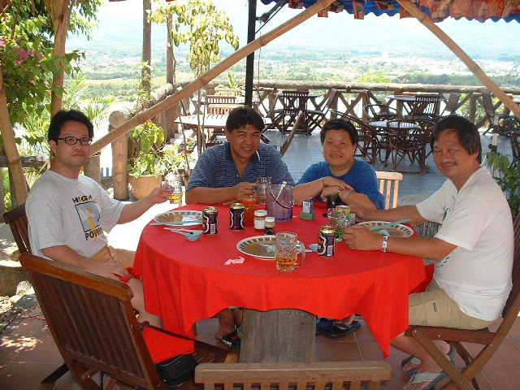
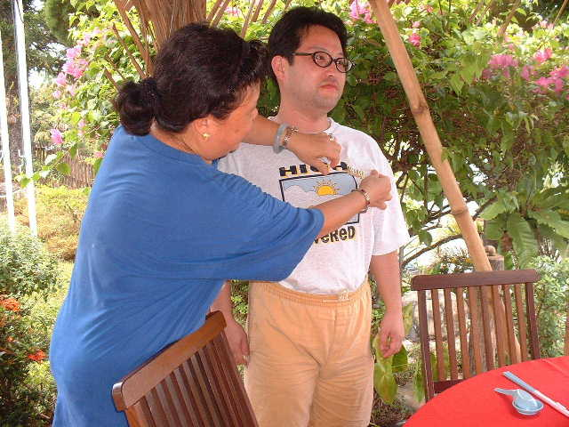
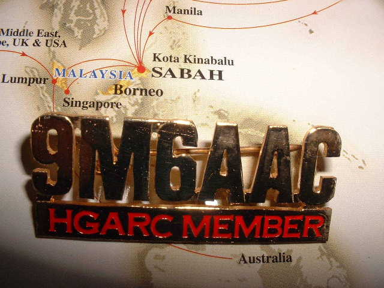
 |
Hillview Gardens 2002(2) |